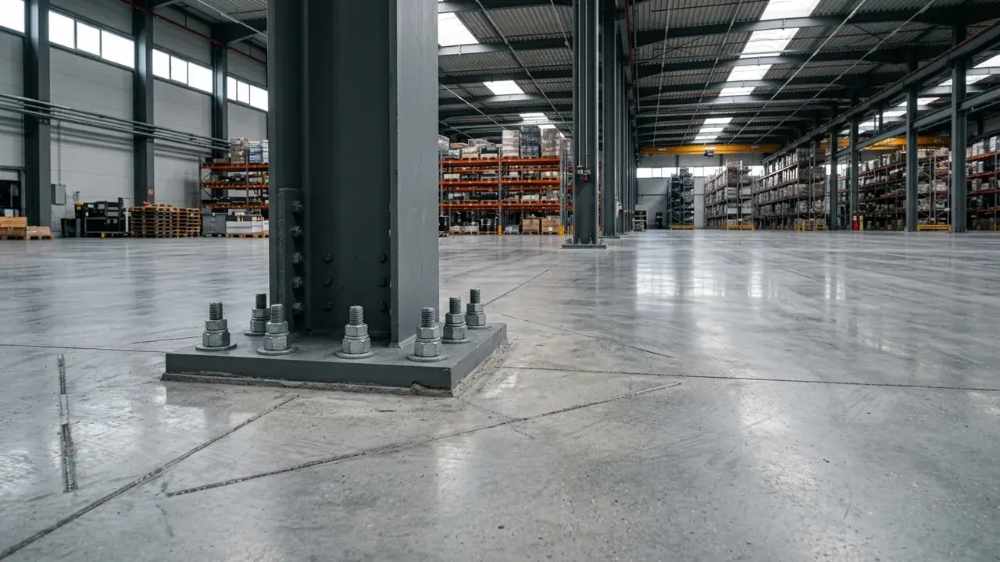

Apa Saja Faktor Kunci dalam Mengenal Struktur Bangunan Pergudangan Modern?
Faktor kunci meliputi pemilihan bentang bebas kolom, rasio bobot baja terhadap luasan, daya dukung lantai, serta ketahanan material terhadap korosi lingkungan.
Dalam industri konstruksi modern, efisiensi sebuah gudang diukur dari seberapa maksimal ruang bersih (clear height dan clear span) yang dapat dimanfaatkan untuk penyimpanan logistik. Berdasarkan data Indonesia Supply Chain & Logistics Benchmark Report 2025/2026, optimalisasi tata letak vertikal pada gudang modern berstruktur baja bentang lebar mampu meningkatkan kapasitas volume penyimpanan hingga 42% dibandingkan bangunan konvensional bertiang tengah.
Struktur gudang modern terdiri atas tiga subsistem utama:
- Struktur Bawah (Substructure): Pondasi dalam (bored pile / tiang pancang), pile cap, dan balok sloof pengikat yang mendistribusikan beban gravitasi dan momen guling ke lapisan tanah keras.
- Struktur Atas (Superstructure): Kolom baja IWF/H-Beam, balok rafter atap, sistem ikatan angin (bracing), gording (purlin), dan trekstang (sag rod) yang membentuk portal kaku.
- Plat Lantai Kerja (Floor Slab System): Lantai beton heavy duty dengan sambungan dilatasi terkontrol (contraction joints) untuk mencegah retak susut acak.
Bagaimana Cara Memilih Sistem Rangka Atap Gudang yang Kokoh dan Bebas Kolom Tengah?
Sistem rangka atap dipilih berdasarkan bentang bentangan, di mana sistem portal frame WF ideal untuk bentang 18-36 meter dan truss untuk 40+ meter.
Sistem rangka atap gudang memegang peranan krusial dalam menciptakan area kerja terbuka yang leluasa tanpa terhalang kolom interior. Berikut perbandingan sistem rangka atap yang paling banyak diterapkan:
1. Sistem Portal Frame Baja Profil WF (Wide Flange)
Sistem ini menggunakan kolom dan rafter dari baja WF tunggal atau sistem sambungan haunch (tumpuan jepit diperkuat) pada bagian sudut pertemuan. Keunggulan utamanya adalah kecepatan fabrikasi di workshop, estetika interior yang rapi dan bersih, serta minimnya celah sarang burung atau debu jika dibandingkan rangka batang pipa.
2. Sistem Rangka Batang (Steel Truss System)
Untuk bentang di atas 36 hingga 60 meter tanpa kolom perantara, sistem rangka batang (truss) dari pipa baja kotak (hollow) atau siku ganda memberikan rasio kekuatan terhadap berat yang sangat optimal. Rangka batang mendistribusikan beban atap melalui gaya aksial tarik dan tekan murni, sehingga dimensi material dapat lebih ramping.
3. Sistem Baja Kastela (Castellated / Honeycomb Beam)
Dibuat dengan memotong profil WF secara zigzag lalu menyambungnya kembali dengan pola lubang heksagonal atau lingkaran. Metode ini meningkatkan tinggi efektif penampang hingga 50% dan kapasitas momen lentur secara signifikan tanpa menambah berat total baja.
Bagaimana Menentukan Desain Pondasi Gudang Beban Berat dan Daya Dukung Lantai?
Desain pondasi wajib didasarkan pada hasil uji sondir tanah dan kalkulasi beban titik rak penyimpanan serta manuver alat angkat forklift.
Kerapuhan atau penurunan tanah (differential settlement) pada lantai gudang merupakan ancaman terbesar bagi operasional logistik berskala besar. Lantai gudang tidak hanya menopang beban terdistribusi merata (uniform distributed load), melainkan juga beban titik (point load) dari kaki rak heavy-duty selective pallet yang dapat mencapai 5 hingga 10 ton per titik tumpu.

Pekerjaan pondasi tapak pedestal baja dan pengecoran plat lantai heavy-duty standar logistik industri.
Tahapan rekayasa pondasi gudang beban berat mencakup:
- Uji Penyelidikan Tanah (Soil Investigation): Pelaksanaan sondir CPT (Cone Penetration Test) dan Deep Boring untuk mengetahui kedalaman lapisan tanah keras (nilai N-SPT > 50).
- Pondasi Titik Kolom: Pemasangan tiang pancang beton bertulang atau strauss pile yang diikat dengan pile cap monolitik tebal, dilengkapi angkur baja mutu tinggi (high tensile anchor bolts ASTM A325).
- Konstruksi Plat Lantai (Slab on Grade): Pengecoran lantai beton tebal 15-25 cm dengan mutu K-350 (fc' 29 MPa), tulangan wiremesh ganda M8/M10, serta aplikasi serbuk metallic / non-metallic floor hardener 5 kg/m² untuk permukaan lantai yang tahan gesekan dan bebas debu (dust-proof).
Tabel Komparasi Sistem Struktur Bangunan Pergudangan
Tabel komparasi menyajikan perbandingan teknis antara Portal Frame Baja WF, Rangka Kuda-Kuda Batang, dan Sistem Precast Beton.
| Parameter Evaluasi | Portal Frame Baja WF | Rangka Batang Truss | Beton Pracetak (Precast) |
|---|---|---|---|
| Rentang Bentang Efisien | 18 – 36 meter | 30 – 60+ meter | 12 – 24 meter |
| Kecepatan Konstruksi | Sangat Cepat (Ereksi Baut) | Sedang (Perakitan Las/Baut) | Cepat (Perakitan Elemen Jadi) |
| Beban Sendiri Struktur | Ringan – Sedang | Sangat Ringan | Sangat Berat |
| Ketahanan Api (Fire Rating) | Perlu Cat Intumescent | Perlu Cat Intumescent | Sangat Tinggi Alami |
| Kebutuhan Perawatan | Pengecatan Berkala Anti-Karat | Pembersihan Sela Batang | Sangat Rendah |
| Fleksibilitas Modifikasi | Sangat Tinggi (Bongkar Pasang) | Tinggi | Rendah (Sulit Diubah) |
| Efisiensi Biaya Total | Paling Ekonomis (Skala Menengah) | Ekonomis Bentang Luas | Tinggi Biaya Mobilisasi Awal |
- Gunakan Jarak Portal (Bay Spacing) Optimal: Tentukan jarak antar kolom portal pada rentang 6 hingga 8 meter untuk memaksimalkan kapasitas bentang gording baja ringan CNP/Zed tanpa pemborosan profil.
- Pilih Kemiringan Atap yang Tepat: Kemiringan atap 10° hingga 15° sudah sangat ideal untuk mengalirkan air hujan deras iklim tropis sekaligus meminimalkan luasan penutup atap seng spandek zincalume.
- Terapkan Sistem Pre-Engineered Building (PEB): Fabrikasi komponen baja yang dipotong, dilubangi, dan dicat di pabrik (workshop) dengan pengawasan mutu ketat akan mereduksi sisa potongan material (scrap waste) di lapangan hingga di bawah 3%.
Pertanyaan yang Sering Diajukan (FAQ)
Kesimpulan Praktis
Membangun gudang yang efisien dan kokoh adalah investasi jangka panjang yang memerlukan ketepatan rekayasa teknik dari tahap pondasi hingga atap. Pemilihan sistem struktur yang tepat sejak awal melindungi aset operasional dan menekan biaya operasional harian.